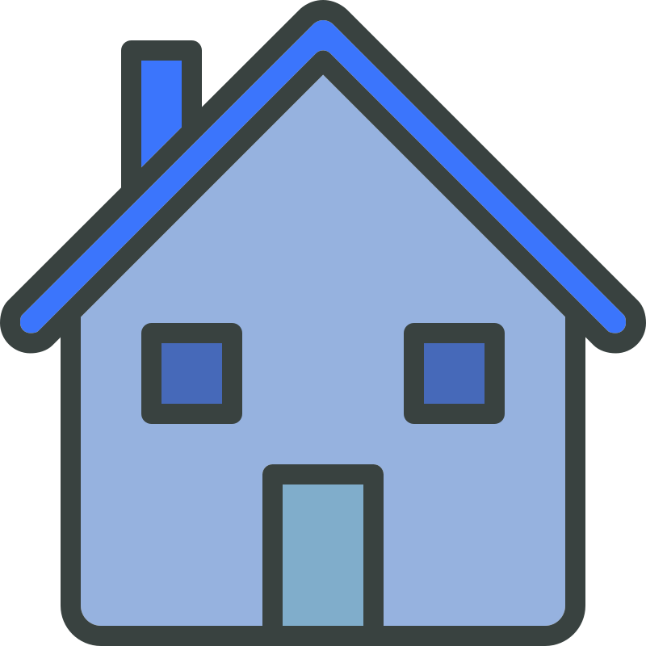
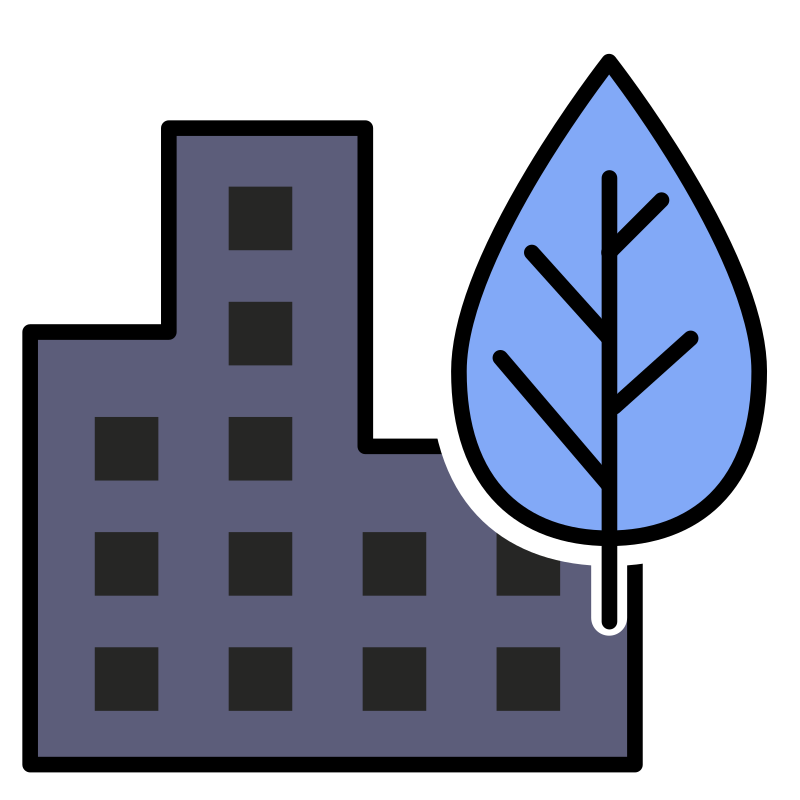

Speed, Time and Distance
A person goes from home to office at 54 km/hr and returns by the same route at 36 km/hr. Find the average speed of the round trip.
Q



54 km/hr
36 km/hr
Average Speed = ?
Home ↔ office at 54 km/hr / 36 km/hr — find average speed.
Distance (each way) = x km
Given
Speed (Going) = 54 km/hr
Speed (Return) = 36 km/hr
Distance = x km
Speed (Return) = 36 km/hr
Distance = x km
Step 1
Time = DistanceSpeed
Time (Going) = x54 hr
Time (Return) = x36 hr
Time (Going) = x54 hr
Time (Return) = x36 hr
Step 2
Total Distance = x + x = 2x km
Total Time = x54 + x36 = 5x108 hr
Total Time = x54 + x36 = 5x108 hr
Step 3
Average Speed = Total DistanceTotal Time
= 2x ÷ 5x108
= 2x × 1085x
x cancels → 2165 = 43.2 km/hr
= 2x ÷ 5x108
= 2x × 1085x
x cancels → 2165 = 43.2 km/hr
G
Speed (Going) = 54 km/hr
Speed (Return) = 36 km/hr
Distance = x km
Speed (Return) = 36 km/hr
Distance = x km
1
Time (Going) = x54 hr
Time (Return) = x36 hr
Time (Return) = x36 hr
2
Total Distance = 2x km
Total Time = 5x108 hr
Total Time = 5x108 hr
3
Average Speed = 43.2 km/hr